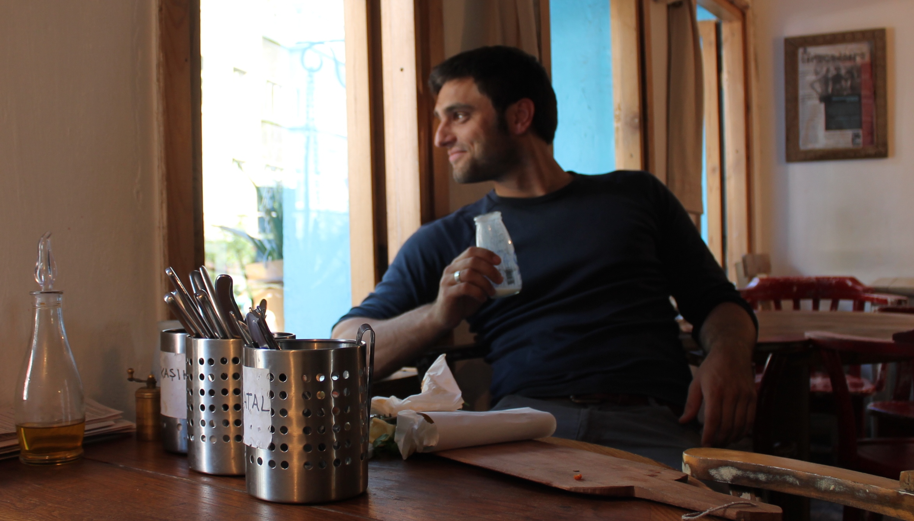

Welcome to my homepage!
I am currently in the third year of my PhD at the European University Institute, my advisors are Fabio Canova and Juan José Dolado. I visited London School of Economics in spring 2015, where I was supervised by Wouter Den Haan.
I am currently doing a traineeship at ECB in Frankfurt.
My main interests are empirical macroeconomics, particularly the area of monetary and financial economics. See here for a short CV.
You can contact me under benedikt[at]bkolb.eu.

|